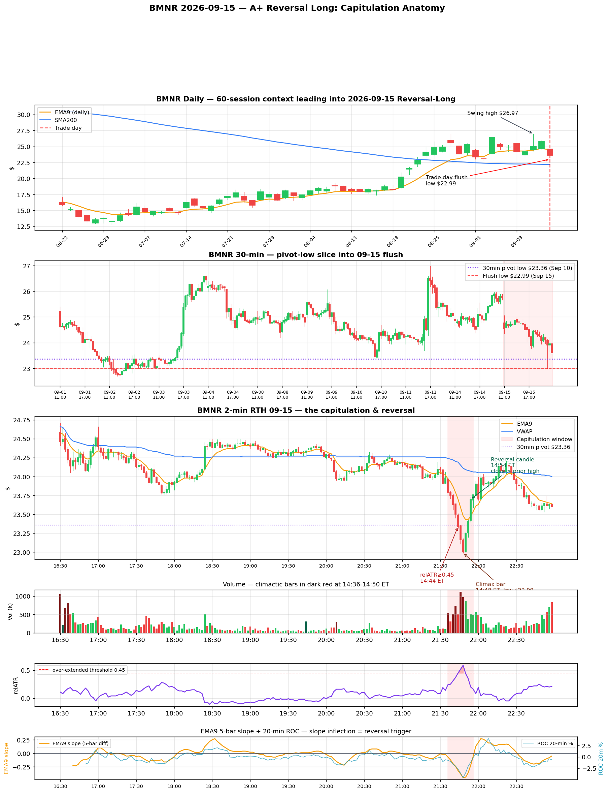

This was not a trend reversal. It was a stop cascade. The whole trade lives inside a ten-minute window on the 2-minute chart, and every piece of it — the daily posture, the pre-market fade, the 30-minute pivot getting sliced, the climax bar, the volume dropping on the recovery — is textbook capitulation geometry. Recognizing it in real time is the point of this write-up.

BMNR is BitMine Immersion — an Ethereum treasury vehicle holding ~5.96M ETH tokens. It moves in step with ETH. On this day the tape was hostile in a very specific way, which is what mattered for the setup: the 10-year Treasury yield poked above 5.0% — highest since 2007 — Bitcoin lost $77,000, and Ethereum slid to $2,476 ahead of a Senate vote on the CLARITY Act. The Fed decision was queued for the next morning.
None of that is a "sell BMNR forever" story. It is exactly the forced-selling-into-an-event backdrop that produces capitulation lows in leveraged crypto proxies without breaking their underlying trend. The condition sets the trade.
From the June 22 low near $13, BMNR ran roughly 2× and closed 09-14 at $25.76, sitting +16.0% above SMA200 and only +4.3% above daily EMA9. Trend was extended enough to attract a pullback, not so extended that only a top would resolve it.
The tell was 09-11: 51M shares, a +10.7% intraday range that closed red at the swing high — a churn/bearish-engulf that logged supply and printed the reference $26.97 swing high. 09-14 tried to rally back but failed at $25.97. So on the trade day the daily EMA9 was rising at ~$24.70 (magnet directly beneath price), SMA200 was rising at $22.19 (ultimate downside guardrail), and the supply top from four sessions earlier framed the ceiling.
The trade day's daily bar (24.59 / 24.71 / 22.99 / 23.60) was a 0.8× ATR undercut of daily EMA9 — deep enough to shake weak hands, shallow enough that SMA200 was never threatened. Classic pullback-in-uptrend geometry.
Pre-market wasn't the capitulation. It signaled sellers had control but left the reservoir of trapped longs above — the necessary condition for a mid-session flush.
The nearest visible 30-min swing low was $23.36 — the first RTH bar low from 09-10, the little washout that preceded the 09-11 breakout. Everything from Sep 8 through Sep 14 held above $24.12. That $23.36 was the obvious stop level.
On the trade day, the 30-min bar at 14:30 ET printed a low of $22.99 — $0.37 (−1.6%) below the pivot, right on top of the 09-02 base at $22.81–23.00. Two features of the slice made the trade:
Controlled walk under EMA9 and VWAP, $24.71 → $24.00. relATR oscillates 0.0–0.3. Per-bar volume 60–200k. EMA9 5-bar slope near zero. Even distribution. This is the pattern you do not take.
526k volume bar, 4.9× the trailing 20-bar mean. ROC(20-min) turns to −0.96%. You don't buy it — you tag the tape: something changed.
Two bars with 509k / 733k volume. ROC(20-min) −1.6% → −2.0%. EMA9 slope −0.19 → −0.24. Ten of the last twelve bars are red. relATR: 0.31 → 0.37. Still under threshold — but the second derivative of the slope is now positive-negative.
ROC5 = −2.67%. EMA9 5-bar slope = −0.32. This is the "over-extended" bell. Trade goes from watching to armed.
1.113 M shares on a single 2-min bar — 4.4× trailing average and the largest print of the RTH session. relATR 0.52, EMA9 slope −0.38, ROC(20-min) −3.58%. Everyone who was going to sell sold here. Climactic volume typically shows up on the second-to-last down bar, not the low bar.
975k volume — lower than the climax bar. That drop is the first signal. relATR peaks at 0.59. Low $22.99. Slice complete.
Opens at low $23.00, closes $23.25. 867k on a lower close is impossible without buyer absorption. Wick sitting on the day low. This is the shape of a capitulation-with-reversal bar.
523k volume — 47% of climax. Close $23.70 above the prior two bars' highs. EMA9 5-bar slope halves from −0.44 → −0.22. Every rule the detector wants is satisfied simultaneously.
Total elapsed: from the first over-extended print at 21:44 to the confirmed reversal candle at 21:54 is ten minutes / five 2-min bars. That is the entire trade window.
The characteristic profile is flat → ramp → single explosive bar → contraction on the reversal. If the reversal bar has volume equal to or greater than the climax bar, that is continuation, not reversal. The 21:54 candle used 47% of the climax bar's volume — a textbook exhaustion signature.
| Phase | Bars | Total vol | Avg / bar | vs pre-flush |
|---|---|---|---|---|
| Pre-flush grind 16:30–21:30 | 150 | 22.0 M | 147 k | 1.0× |
| Capitulation window 21:30–21:56 | 14 | 7.25 M | 518 k | 3.5× |
| Peak climax bar 21:46 | 1 | 1.11 M | 1.11 M | 7.6× |
| Post-reversal recovery 21:56–23:00 | 31 | 9.0 M | 291 k | 2.0× |
Track the EMA9 5-bar difference from the moment price closes back below EMA9 coming from above (here 21:32, close $23.90 vs EMA9 $24.03). The trajectory:
The rule this yields is portable across setups: the 5-bar EMA9 slope becomes monotonically more negative for 5+ consecutive bars, then reverses. In a normal grind, the slope stays in a band of −0.05 to −0.10 and does not accelerate. In capitulation, each 2-min bar makes the slope 20–30% more negative than the previous.
The second derivative (bar-over-bar change of slope) hits its max positive value one bar before price reverses. Δslope reads +0.01 at 21:50, +0.08 at 21:52, +0.14 at 21:54. That is the real-time "the fall is decelerating" signal.
vol_ratio (bar / trailing-20 mean) > 3.0vol_ratio ≥ 3× AND highest 2-min volume of the session so farThe 09-15 BMNR trade satisfies every one of these at 21:54 Kiev / 14:54 ET. Run the framework against your other Reversal-Long tags and it should flag the A / A+ setups and reject the days that grind without accelerating.
For a single-value real-time alert, combine three z-scores on rolling 20-bar windows:
On 09-15 this score would have crossed ~6.0 at 21:46 — the climax bar. A threshold rarely reached except on these setups. Add the trigger-bar condition on the next bar and you have an end-to-end automated detector.
A grind is linear — constant slope, constant volume, no relATR expansion. Sellers are patient. Every bar looks like the previous bar.
A capitulation is exponential — each bar's slope, volume and relATR is larger than the previous bar's. The rate of change is the change of rate. Grinds have straight-line slope; capitulations have hockey-stick slope.
Once no more market sellers exist below the shelf, price has to reverse simply because natural bid returns.
The macro lens confirms the story here. A controlled crypto grind-down on rising yields does not produce this shape. What produced this was a specific stop cascade: the $23.36 pivot acted as a magnet, algos hunted it, long-only holders got margin-called on the ETH breakdown, and the same volume that ripped through the pivot exhausted itself against the $22.99 shelf.